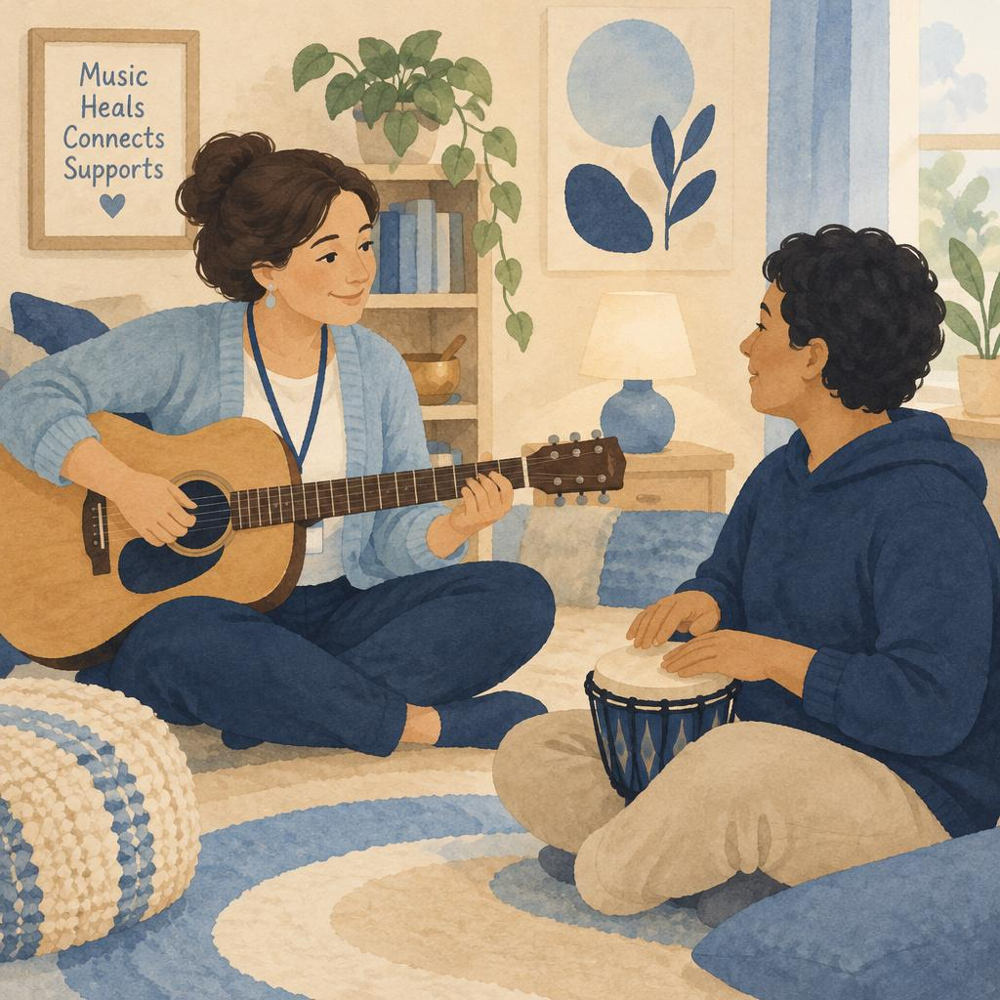

Saúde emocional
Favorece a expressão dos sentimentos e o equilíbrio emocional.
sinta, escute, cuide-se
A musicoterapia utiliza a música e seus elementos como parte de um processo terapêutico, promovendo experiências de expressão, comunicação e cuidado para diferentes pessoas e necessidades.


A musicoterapia é uma prática terapêutica que utiliza a música e seus elementos em processos conduzidos por profissionais qualificados. Por meio de experiências musicais, pode favorecer a expressão, a comunicação, a interação e o bem-estar, conforme as necessidades e os objetivos de cada pessoa.
Saiba mais sobre a musicoterapiaA musicoterapia pode contribuir para diferentes aspectos da saúde e do bem-estar.
Favorece a expressão dos sentimentos e o equilíbrio emocional.
Pode ajudar no relaxamento e no alívio das tensões do dia a dia.
Utiliza a música como forma de expressão e interação.
Contribui para o cuidado integral e o bem-estar.
Espaço reservado para apresentar conteúdos sobre estudos e atualizações da área.
Ler maisEspaço reservado para explicar como a prática pode estar presente em diversos ambientes de cuidado.
Ler maisEspaço reservado para reflexões sobre a presença da música na rotina.
Ler maisReserve alguns minutos para fazer uma pausa, ouvir uma música tranquila e prestar atenção ao momento presente.
Esta é uma sugestão de pausa e não substitui uma sessão com profissional de musicoterapia.
Ouvir músicasArtista · duração